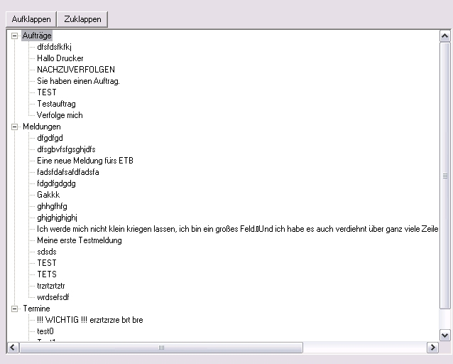
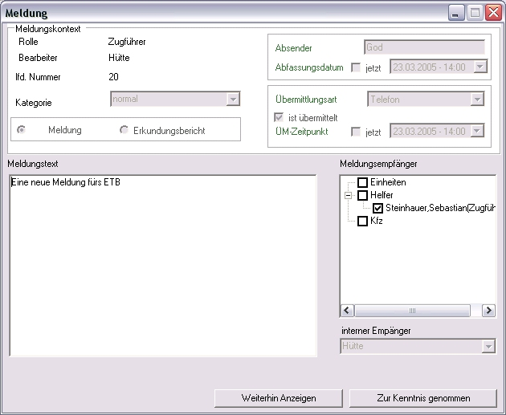

|
|
|
|
Zurück
ToDo-Liste
Die ToDo-Liste Aufträge, Meldungen und Termine an, welche für den aktuell angemeldeten Benutzer bestimmt sind.

ToDo-Liste
Die drei Kategorien Aufträge, Meldungen und Termine werden gruppiert angezeigt.
Durch einen Doppelklick auf eine der drei Kategorien werden alle dazugehörigen Einträge
ein- bzw. ausgeblendet.
Wird ein Eintrag durch einen Doppelklick ausgewählt, so werden alle Daten in einem neuen Fenster angezeigt.
 ToDo-Liste Auftrag
ToDo-Liste Auftrag
 ToDo-Liste Termin
ToDo-Liste Termin

ToDo-Liste Meldung
In diesen Fenstern kann der Benutzer über den weiteren Umgang mit diesem
Eintrag entscheiden. Durch die Wahl von 'Weiterhin Anzeigen' wird der Eintrag weiterhin in der
ToDo-Liste abgezeigt. Durch die wahl von 'Zur Kenntnis genommen', so wird der Eintrag
aus der ToDo-Liste entfernt.
Ein Zurücknehmen der Zur Kenntnisnahme ist nicht mehr möglich!
Zurück
project.ELS version 1.0
|
|